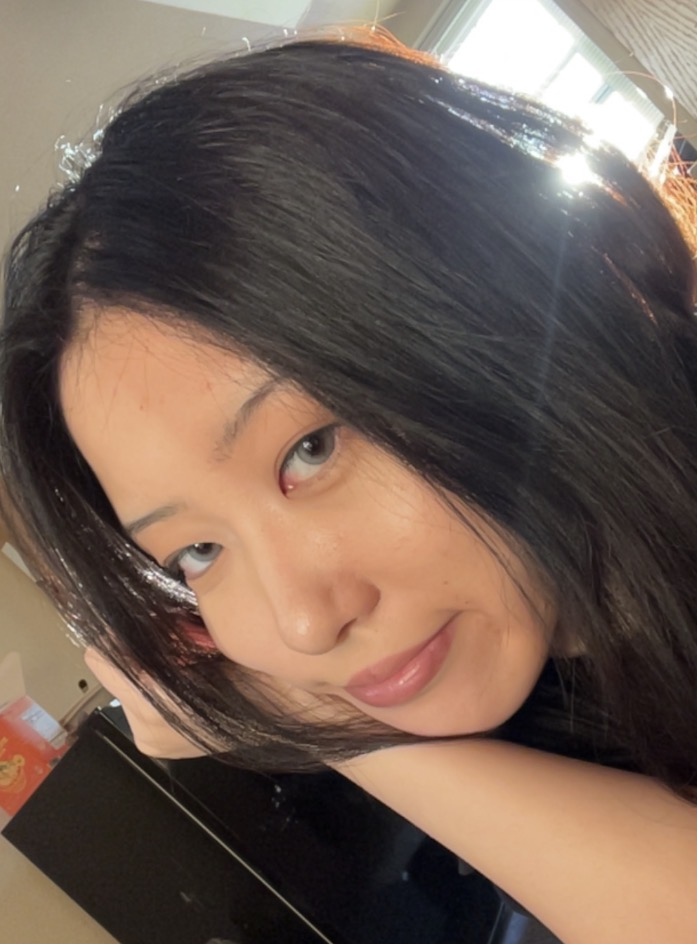

I am a sophomore at Albion College pursuing a double major in mathematics and economics with a minor in finance. I have earned a 4.0 in my economics courses and have studied topics in both microeconomics and macroeconomics. I recently joined the Finance Club and am also beginning to study computer science. I am especially interested in finance and hope to use mathematics, economics, and data together in my future career.